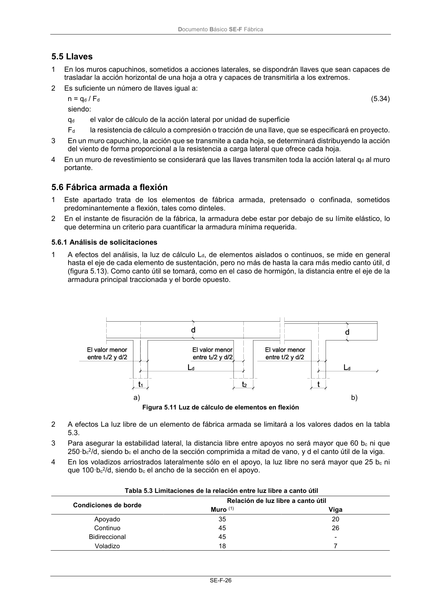

DB-SE-F Fábrica · edición 2019-12-20 · capa oficial
Documento DB-SE-F-oficial · SHA-256 del PDF e3e0805c3b4c307519c26dc34c3fdbf143d842edd013c91b0f52d2c73403d91c
Copia fiel del PDF fuente · Fuente oficial
Ficha de la disposición en la fuente oficial
Formatos: JSON del segmento · Markdown
5.6.1 Análisis de solicitaciones 1 A efectos del análisis, la luz de cálculo Ld, de elementos aislados o continuos, se mide en general hasta el eje de cada elemento de sustentación, pero no más de hasta la cara más medio canto útil, d (figura 5.13). Como canto útil se tomará, como en el caso de hormigón, la distancia entre el eje de la armadura principal traccionada y el borde opuesto. a) b) Figura 5.11 Luz de cálculo de elementos en flexión 2 A efectos La luz libre de un elemento de fábrica armada se limitará a los valores dados en la tabla 5.3. 3 Para asegurar la estabilidad lateral, la distancia libre entre apoyos no será mayor que 60 bc ni que 250·bc2/d, siendo bc el ancho de la sección comprimida a mitad de vano, y d el canto útil de la viga. 4 En los voladizos arriostrados lateralmente sólo en el apoyo, la luz libre no será mayor que 25 bc ni que 100·bc2/d, siendo bc el ancho de la sección en el apoyo. Tabla 5.3 Limitaciones de la relación entre luz libre a canto útil Condiciones de borde Relación de luz libre a canto útil Muro(1) Viga Apoyado 35 20 Continuo 45 26 Bidireccional 45 - Voladizo 18 7 Documento Básico SE-F Fábrica SE-F-27 (1) Se considera muro un elemento sometido a flexión compuesta esviada. Se considera viga la parte de un muro sometida a una flexión recta contenida en su plano. Para los muros de extremo libre sometidos a una acción predominante de viento y que no formen parte de una estructura, la limitación de la relación luz libre/canto útil puede incrementarse en un 30% si los revestimientos admiten deformaciones sin dañarse. 5 Una vez analizadas las solicitaciones de un dintel, se pueden redistribuir con las mismas condiciones y limitaciones que establece la norma de hormigón vigente. 6 Para determinar el esfuerzo cortante de cálculo de un elemento sometido a una carga uniformemente distribuida, puede admitirse que el máximo esfuerzo cortante se produce a la distancia d/2 de la cara del apoyo, siendo d el canto útil de la sección si se cumple que: a) Las acciones y las reacciones se pueden equilibrar mediante bielas a compresión a 45º y arma- dura de tracción. b) En los extremos la armadura de tracción se ancla una longitud no inferior a la necesaria ni a una distancia de 2,5 d. c) En una sustentación intermedia, la armadura de tracción necesaria, se prolonga desde la cara del elemento de soporte una longitud de al menos la de anclaje más 2,5d
